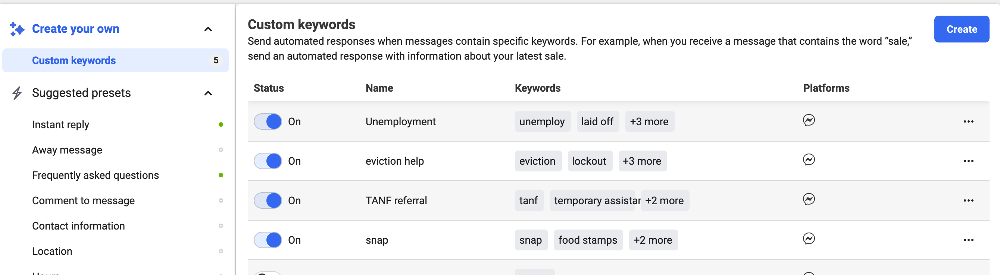

Facebook Integrations
OTIS is integrated into Facebook Messenger using keywords to deliver specific messages when the user’s initial message contains one or more of those keywords.
Note
Only ILAO’s Facebook admins can configure these messages.
Custom keywords are found under Facebook Messenger => Automated responses. Each response is limited to 5 phrases or keywords. Partial matches work (for example, unemploy as a keyword will work for unemploy, unemployment, unemployed).
As of November 2021, we have custom keywords set up for:
Unemployment - keywords of unemploy, laid off, fired, quit job, ides
Eviction - keywords of tenant, landlord, rent, evict, lockout
TANF - keywords of tanf, temporary assistance, welfare, cash assistance
SNAP - keywords of food, snap, hungry, food stamps
Each custom response includes:
One or more ways to get legal help, with a custom url to Get Legal Help with the issue prefilled
One or more pieces of legal information as a button
A button to search IllinoisLegalAid.org which goes to the home page
Note
Facebook will only return 1 response and appears to pick the first one from the bottom up on the keywords list.